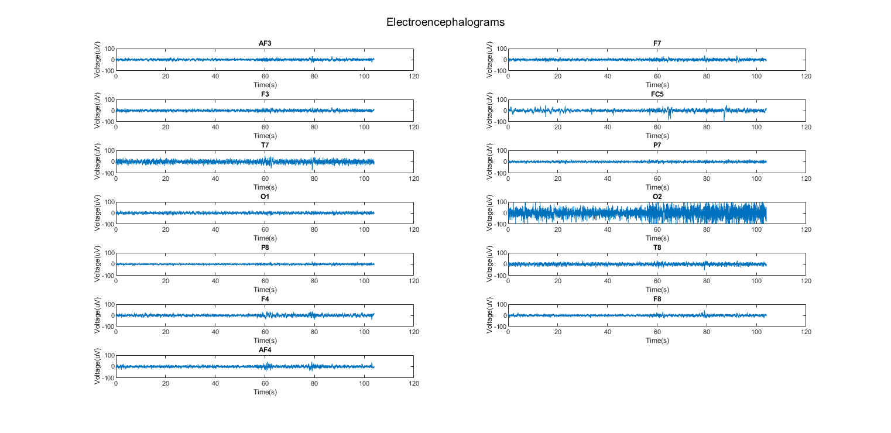
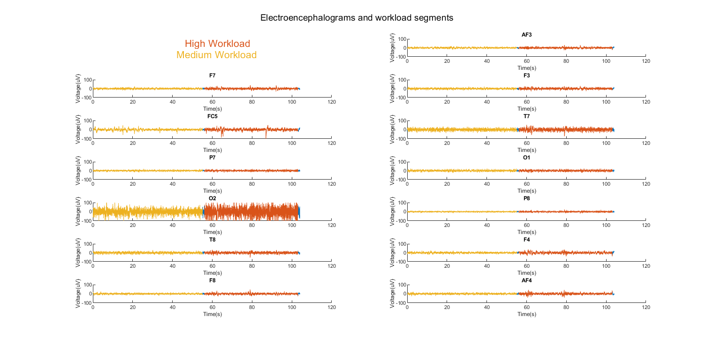
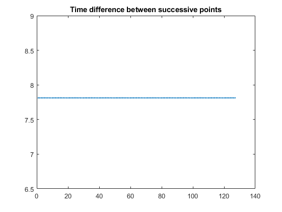
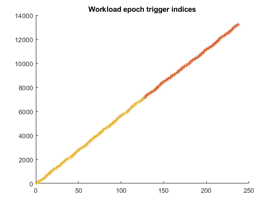
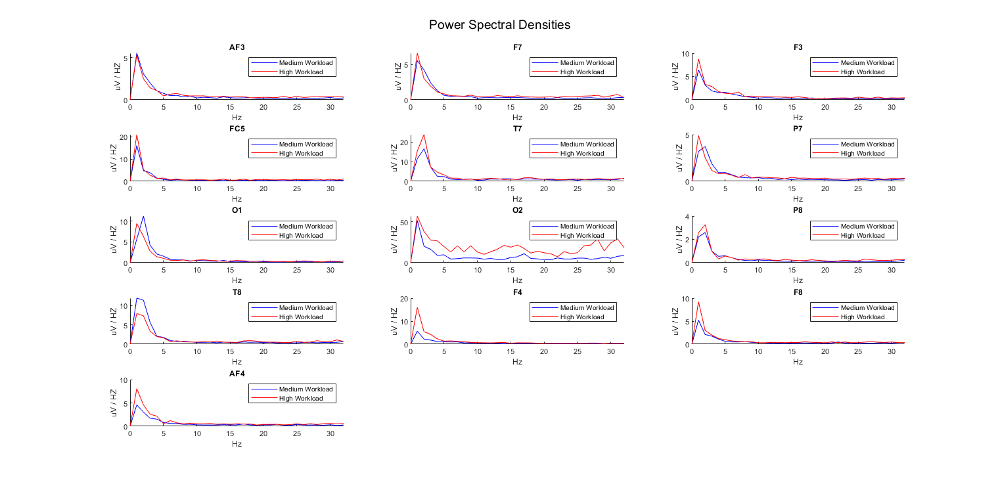
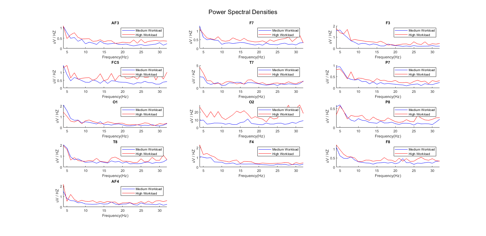

Feature selection of Electroencephalography (EEG) data for workload level detection.
Contents
- Introduction
- Load data from best performing subject
- Plot all electrodes EEG
- 1) segment data for high vs medium workload
- Evaluate power spectral density differences at each electrode.
- 3 + 4: compute mean power spectral densities
- Visualize power spectral densities without delta.
- Stage 1 of feature reduction.
- Perform stepwise logistic regression for variable selection
- Next steps
Introduction
Exploring signal processing, visualization, and machine learning techniques with EEG data for MATLAB. The data is from select participants who performed virtual reality flight simulations of that varied in level of difficulty throughout the flight task. I am interested in correlations between EEG data and workload (corresponding to flight difficulty)
The EEG datasets loaded in this project were preprocessed using an automated script that implemented independent component analysis. The script labelled each 1-second window of data as either high or medium workload. The script outputted a continuous dataset that appended non-contiguous epochs, that were separated due to epoch rejection. A continuous dataset was necessary for BCIlab implementation. A second dataset was created that keep data epoched. This was used to power density analysis which was used to direct EEG feature selection for machine learning model.
Load data from best performing subject
data_CT = load('-mat','C:\Users\akfra\Desktop\s15_appended_CT.set'); % the continuous dataset. Going to visualize EEG from preprocessing
Plot all electrodes EEG
t=data_CT.EEG.times;
y=data_CT.EEG.data;
labels = {data_CT.EEG.chanlocs(:).labels};
p = figure;
for i=1:13
subplot(7,2,i);
plot(t/1000,y(i,:));
title(labels(i));
ylim([-100 100]);
ylabel('Voltage(uV)');
xlabel('Time(s)');
sgtitle('Electroencephalograms');
end
set(p, 'Units', 'Normalized', 'OuterPosition', [0, 0.04, 1, 0.96]);
figure(p)
snapnow
% plot shows there is less than 120 s of data. This is due to epoch rejection.
% Electrode O2 is displaying much greater voltage deflections than other
% electrodes. This is likely noise - probably coming from rate of blinks,
% eye movements, or electrode displacement.
 1) segment data for high vs medium workload
I am using latency field to obtain 'trigger' times that indicate workload condition. latency contains time indices of when a code was sent to EEG indicating high or low workload. code '2211' corresponds to medium workload and '4422' corresponds to high.
latency = cell2mat({data_CT.EEG.event(:).latency});
event = {data_CT.EEG.event(:).type};
mwl_idx = strcmp(event, '2211');
mwl_idx = latency(mwl_idx); % number of timepoints from beginning of recording.
mwl_1 = mwl_idx(1);
mwl_end = mwl_idx(end);
hwl_idx = strcmp(event, '4422');
hwl_idx = latency(hwl_idx);
hwl_1 = hwl_idx(1);
hwl_end = hwl_idx(end);
% Display time segmentation
p = figure;
subplot(7,2,1);
text( 0.35,0.15,'Medium Workload', 'color', '#EDB120', 'FontSize', 16); axis off;
text( 0.385,0.8,'High Workload', 'color', '#D95319', 'FontSize', 16); axis off;
for i=1:13;
subplot(7,2,i+1);
hold on;
plot(t/1000,y(i,:));
plot(t(mwl_1:mwl_end)/1000, y(i, mwl_1:mwl_end),'color','#EDB120');
plot(t(hwl_1:hwl_end)/1000, y(i, hwl_1:hwl_end), 'color', '#D95319');
title(labels(i));
ylim([-100 100]);
ylabel('Voltage(uV)');
xlabel('Time(s)');
sgtitle('Electroencephalograms and workload segments');
hold off;
end
set(p, 'Units', 'Normalized', 'OuterPosition', [0, 0.04, 1, 0.96]);
figure(p)
snapnow
% The workload conditions are segmented and roughly balanced. There is slightly more time spent in medium workload.
 Evaluate power spectral density differences at each electrode.
'Continuous' dataset is actually sampled from different time points, so oscillations being examined get interupted.
Therefore:
- 1) import epoched data.
- 2) index high and medium workload epochs.
- 3) compute densities for each epoch.
- 4) average across epochs for each workload level.
- 1) Load epoched data from a good performing subject. (R project 'EEG power densities' explores this topic).
data_EPOC = load('-mat','C:\Users\akfra\Desktop\s15_appended_EPOC.set'); % 2) index high and medium workload epochs labels = {data_EPOC.EEG.chanlocs(:).labels}; % determine sampling rate figure; plot(diff(data_EPOC.EEG.times), '.') title('Time difference between successive points'); max(diff(data_EPOC.EEG.times)) - min(diff(data_EPOC.EEG.times)); fs = 1000/mean(diff(data_EPOC.EEG.times)); % plot times for hwl and mwl events. Determine how I will partition them. figure; hold on; plot(latency); mwl_pts = ismember(event, '2211'); hwl_pts = ismember(event, '4422'); x_mwl = find(ismember(event, '2211')); x_hwl = find(ismember(event, '4422')); plot(x_hwl, latency(hwl_pts),'*'); plot(x_mwl, latency(mwl_pts),'*') title('Workload epoch trigger indices') hold off; snapnow 
label epochs as high or medium workload. no neutral workload conditions were included in this data set, and workload was segmented rather than mixed. so determine where the cutoff is to partition high and medium workload.
hwl_1; % first hwl trigger index hwl_1_time = hwl_1 * 1000/fs; % time of first hwl trigger epoch_time = data_EPOC.EEG.times(end) - data_EPOC.EEG.times(1); epoch_change = hwl_1_time/epoch_time; % this corresponds to cutoff between medium and high workload segments. % split these segments epoch_change; % 56.5 medium_epochs = data_EPOC.EEG.data(:,:, 1:55); high_epochs = data_EPOC.EEG.data(:,:, 57:end);
3 + 4: compute mean power spectral densities
pl = figure; for chan = 1:13; % for each electrode channel for epoch = 1:55; % for each epoch within medium workload segment [Pxx, Freq] = periodogram(medium_epochs(chan,:,epoch),[],length(medium_epochs),fs, 'onesided'); % fs is sampling freq. 'onesided' makes all powers positive, as negative powers are not theoretically possible p_mat_medium(:,epoch) = Pxx; % storing densities for each epoch in a matrix end medium_pxx_mean = median(p_mat_medium,2); % average powers across epochs for each frequency for epoch = 1:48; [Pxx] = periodogram(high_epochs(chan,:,epoch),[],length(high_epochs),fs, 'onesided'); p_mat_high(:,epoch) = Pxx; end high_pxx_mean = median(p_mat_high,2); for p = 1:13; subplot(5,3,chan); hold on; p = plot(Freq(1:33),medium_pxx_mean(1:33)); p2 = plot(Freq(1:33),high_pxx_mean(1:33)); set(p,'Color','b'); set(p2,'Color','r'); title(labels(chan)); xlim([0 32]); ylabel('uV / HZ'); xlabel('Hz'); legend ('Medium Workload', 'High Workload'); hold off; end end set(pl, 'Units', 'Normalized', 'OuterPosition', [0, 0.04, 1, 0.96]); figure(pl) sgtitle('Power Spectral Densities'); snapnow % not any visually salient effects of workload. Low frequency differences % may be accounted for by movement induced by high workload scenarios. % Delta oscillations are sensitive to neck and jaw muscle tension which % would be prevalent in the current study as natural movements were % encouraged.
Visualize power spectral densities without delta.
Delta was identified as a likely source of noise due to jaw clenching and head movements. Removing delta will refine the scale on the plots and may help identify patterns.
pl = figure; for chan = 1:13; for epoch = 1:55; [Pxx] = periodogram(medium_epochs(chan,:,epoch),[],length(medium_epochs),128, 'onesided'); p_mat_medium(:,epoch) = Pxx; end medium_pxx_mean = median(p_mat_medium,2); for epoch = 1:48 [Pxx] = periodogram(high_epochs(chan,:,epoch),[],length(high_epochs),128, 'onesided'); p_mat_high(:,epoch) = Pxx; end high_pxx_mean = median(p_mat_high,2); for p = 1:13; subplot(5,3,chan); hold on; p = plot(Freq(5:33),medium_pxx_mean(5:33)); p2 = plot(Freq(5:33),high_pxx_mean(5:33)); set(p,'Color','b'); set(p2,'Color','r'); title(labels(chan)); xlim([4 32]); ylabel('uV / HZ'); xlabel('Frequency(Hz)'); legend ('Medium Workload', 'High Workload'); hold off; end end set(pl, 'Units', 'Normalized', 'OuterPosition', [0, 0.04, 1, 0.96]); figure(pl) sgtitle('Power Spectral Densities') snapnow % Still no obvious patterns between workload and power density.
Stage 1 of feature reduction.
%* REMOVE 02: Electrode O2 is displaying peculiar behaviour, non representative of % regular EEG. % Fascinatingly, this may be a good index of workload, such as eye movement / head movement artifacts brought on by increased workload. % However it is likely not the source of brain activity we are interested in so will remove this electrode. % %* REMOVE delta: Frequencies below 4 HZ are susceptible to movement artifacts and jaw clenching. % This is a large concern in the current study as regular movement was encouraged to obtain better ecological validity.
Perform stepwise logistic regression for variable selection
- structure data
medium_rows = []; for chan = [1:7, 9:13]; % O2 is #8 for epoch = 1:55; [Pxx] = periodogram(medium_epochs(chan,:,epoch),[],length(medium_epochs),128, 'onesided'); medium_rows(size(medium_rows,1)+1, :) = [Pxx(2:33)', chan, 0]; end end high_rows = []; for chan = [1:7, 9:13]; for epoch = 1:48; [Pxx] = periodogram(high_epochs(chan,:,epoch),[],length(high_epochs),128, 'onesided'); high_rows(size(high_rows,1)+1, :) = [Pxx(2:33)', chan, 1]; end end full = [medium_rows ; high_rows]; % * Create sub-band frequency bins averages. % This will reduce the amount of predictor variables and 1 Hz bins aren't commonly computed in EEG research. % Sub-band ranges, e.g. low alpha & high alpha are often used to bin similar patterns of activity. % There is initially a lot of computational demand when evaluating each 1:32 frequency and their interactions. % So feature reduction is necessary for this reason as well. freq_bins(:,1) = mean(full(:,4:5),2); freq_bins(:,2) = mean(full(:,6:8),2); freq_bins(:,3) = mean(full(:,8:9),2); freq_bins(:,4) = mean(full(:,9:10),2); freq_bins(:,5) = mean(full(:,11:12),2); freq_bins(:,6) = mean(full(:,12:15),2); freq_bins(:,7) = mean(full(:,16:19),2); freq_bins(:,8) = mean(full(:,20:23),2); freq_bins(:,9) = mean(full(:,24:27),2); freq_bins(:,10) = mean(full(:,28:32),2); freq_bins(:,11:12) = full(:,33:34); var_names = {'LowTheta','HighTheta', 'LowAlpha', 'MidAlpha', 'HighAlpha', 'LowBeta', 'LowBeta2', 'MidBeta', 'MidBeta2', 'HighBeta','electrode','workload'}; % change to table to display variable names T = array2table(freq_bins, 'VariableNames', var_names); T.workload = categorical(T.workload); T.electrode = categorical(T.electrode); T.Properties.VariableNames = matlab.lang.makeValidName(T.Properties.VariableNames); stepwise_model = stepwiseglm(T, 'workload ~ electrode * (LowTheta + HighTheta + LowAlpha + MidAlpha + HighAlpha + LowBeta + LowBeta2 + MidBeta + MidBeta2 + HighBeta)',... 'Distribution', 'binomial', 'PEnter', 0.05 ); % distribution = binomial to account for having two discrete response variables. % 'PEnter' = 0.05 to remove terms from model that are above p = 0.05. pValues = cell2mat({stepwise_model.Coefficients.pValue}); best_features = array2table(pValues, 'RowNames', stepwise_model.CoefficientNames); best_features = sortrows(best_features(2:end,:)); % * Display the best performing features as per p values. best_features(1:20,:)
1. Adding LowTheta:MidBeta2, Deviance = 1030.6006, Chi2Stat = 4.8972183, PValue = 0.026899994
2. Removing HighAlpha:electrode, Deviance = 1040, Chi2Stat = 9.398, PValue = 0.58521
3. Adding MidAlpha:HighAlpha, Deviance = 1035.0545, Chi2Stat = 4.9440646, PValue = 0.026180401
4. Adding LowBeta2:HighBeta, Deviance = 1031.1668, Chi2Stat = 3.8876638, PValue = 0.048642042
5. Adding LowBeta:MidBeta2, Deviance = 1026.6721, Chi2Stat = 4.4947248, PValue = 0.033999586
6. Adding MidAlpha:MidBeta, Deviance = 1022.696, Chi2Stat = 3.9760852, PValue = 0.046150707
7. Removing LowBeta2:electrode, Deviance = 1033.6, Chi2Stat = 10.855, PValue = 0.45545
8. Removing LowBeta:electrode, Deviance = 1045.1, Chi2Stat = 11.592, PValue = 0.39507
9. Removing LowAlpha:electrode, Deviance = 1056.7, Chi2Stat = 11.553, PValue = 0.39819
10. Removing LowAlpha, Deviance = 1057.6, Chi2Stat = 0.93575, PValue = 0.33337
11. Removing LowTheta:electrode, Deviance = 1072.6, Chi2Stat = 15.013, PValue = 0.18191
12. Removing MidAlpha:electrode, Deviance = 1087.7, Chi2Stat = 15.02, PValue = 0.18158
13. Removing HighBeta:electrode, Deviance = 1103.5, Chi2Stat = 15.806, PValue = 0.14851
14. Adding MidBeta:HighBeta, Deviance = 1098.2499, Chi2Stat = 5.2204129, PValue = 0.02232325
15. Removing MidAlpha:MidBeta, Deviance = 1099.6, Chi2Stat = 1.3226, PValue = 0.25013
16. Removing MidAlpha:HighAlpha, Deviance = 1100.9, Chi2Stat = 1.3432, PValue = 0.24646
17. Removing HighAlpha, Deviance = 1101.5, Chi2Stat = 0.54856, PValue = 0.45891
18. Removing MidAlpha, Deviance = 1103.7, Chi2Stat = 2.2043, PValue = 0.13763
ans =
20×1 table
pValues
__________
HighBeta 1.2607e-14
LowBeta2 5.6765e-10
LowBeta 1.3342e-07
LowBeta2:HighBeta 1.1215e-06
LowTheta:MidBeta2 5.8558e-06
LowTheta 3.0546e-05
LowBeta:MidBeta2 0.00043079
MidBeta 0.0034471
MidBeta:HighBeta 0.0043578
MidBeta2 0.0055458
electrode_5 0.0063687
MidBeta2:electrode_9 0.016628
MidBeta:electrode_13 0.036841
MidBeta2:electrode_5 0.04278
HighTheta:electrode_10 0.044941
MidBeta:electrode_10 0.065816
MidBeta2:electrode_6 0.076107
MidBeta:electrode_2 0.10788
MidBeta2:electrode_13 0.11899
MidBeta2:electrode_10 0.12334
Next steps
These features will be used in a machine learning model. I will explore how classification is impacted by this method of dimension reduction. Additionally, I will evaluate if a model generalizes to other participants.